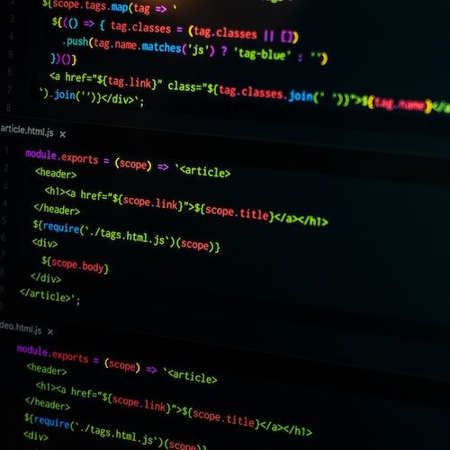
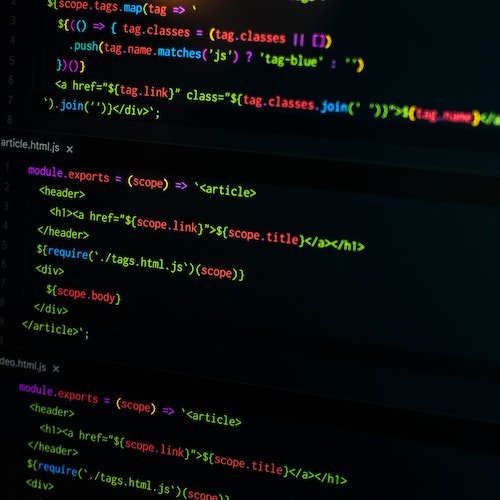

By Jonas Schmedtmann
•
 The Unknown Powers of CSS
The Unknown Powers of CSSBy Jim Dillon
•  Why JavaScript is Awesome
By Matilda
Copyright © 2027by The Code Magazine.
Posted by Laura Jones on Monday, June 21st 2027

All modern websites and web applications are built using fundamental technologies:HTML,CSS and JavaScript.These are the languages of the web.
In this post,let's focus on HTML.We will learn what HTMLis all about,and why you should learn it.
HTML stands for Hyper Text Markup Language. It's a markup language that web developers use to structure and describe the content of a webpage(not a programming language).
HTML consists of elements that describe different types of content: paragraphs ,links,headings,images,video,etc.Web browsers understand HTML and render HTML code as websites.
In HTML, each element is made up of 3 parts:
1.The opening tag
2.The closing tag
3.The actual element
You can learn more at MDN Web Docs
These are countless reasons for learning the fundamental language of the web.Here are 5 of them:
• To be able to use the fundamental web dev language
• To hand-craft beautiful websites instead of relying on tools like Worpress or Wix
• To build web applications
• To impress friends
• To have fun 😃
Hopefully you learned something new here. See you next time!
• How to learn Web Development
By Jonas Schmedtmann
• The Unknown Powers of CSS
By Jim Dillon
•  Why JavaScript is Awesome
By Matilda
Copyright © 2027by The Code Magazine.